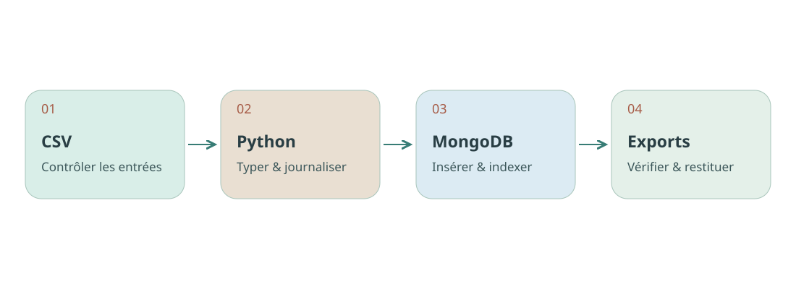

Schéma explicatif du périmètre décrit ; les environnements sont précisés dans l’étude.
Le besoin et ma contribution
Préserver le sens et la qualité des données lors du passage à un stockage documentaire. J’ai implémenté le parsing, la transformation, les contrôles d’intégrité, la migration et les exports.
Une migration instrumentée
- Colonnes attendues et fichiers non vides contrôlés avant transformation.
- Dates et valeurs numériques converties ; âges invalides rejetés.
- Insertion par lots de 500 documents par défaut, avec suivi des succès et échecs.
- Index simples, composé hôpital/date et textuel ; exports JSONL et CSV.
Distinguer les responsabilités
L’environnement Docker prévoit des comptes applicatif et de migration distincts, un healthcheck et des volumes dédiés. Les privilèges sont ceux des rôles MongoDB configurés. Les tests unittest ciblent parsing et transformation ; certains tests d’intégration nécessitent une base disponible.
Vérifier avant et après
Le script produit un bilan de validation et d’insertion, relève le nombre de documents et les index, puis permet une démonstration CRUD. Les extraits ci-dessous exposent les contrôles réellement implémentés, sans transformer la taille de lot en mesure de performance.
Rendre la réconciliation plus stricte
Un écart de comptage n’est pas systématiquement bloquant. L’option de réinitialisation permet de recommencer une migration, mais ne constitue pas un mécanisme d’upsert idempotent. La suite est de renforcer la réconciliation, la gestion des rejets et les tests de rejeu.
Code et éléments de preuve
Les extraits et résultats ci-dessous proviennent des livrables du projet, consultés le 16 novembre 2026. Les traitements n’ont pas été réexécutés pour cette présentation.